|
Lirong Wu (吴立荣) |
News
- [2023.12] One paper on, Protein pre-training, have been accepted by AAAI 2024.
- [2023.12] Two co-authored papers on, AI4Science, have been accepted by AAAI 2024.
- [2023.09] Two co-authored papers on, AI4Science, have been accepted by NeurIPS 2023.
- [2023.09] Two co-authored papers on, mixup and video prediction, have been accepted by NeurIPS 2023.
- [2023.08] One paper on, protein modeling, has been accepted by Communications Biology, congrats to Fang Wu.
- [2023.06] One co-authored paper on, label denoising, has been accepted by TKDE, congrats to Jun Xia.
- [2023.06] One paper on, graph augmentation, has been accepted by ECML 2023.
- [2023.04] One paper on, graph knowledge distillation, has been accepted by ICML 2023.
- [2023.03] One paper on, graph structure learning, has been accepted by TNNLS.
- [2022.02] One co-authored paper on, graph embedding, has been accepted by ICASSP 2023, congrats to Bozhen Hu.
- [2022.02] One co-authored paper on, spatiotemporal prediction, has been accepted by CVPR 2023, congrats to Cheng Tan.
- [2022.12] One paper on, heterogeneous graph, has been accepted by TNNLS.
- [2022.11] One paper on, graph knowledge distillation, has been accepted by AAAI 2023 (Oral).
- [2022.09] Two papers on, graph augmentation and attack, have been accepted by NeurIPS 2022 (Spotlight).
- [2022.08] One co-authored paper on, graph attack, has been accepted by CIKM 2022, congrats to Zihan Liu.
- [2022.08] One co-authored paper on, temporal point process, has been accepted by TMLR, congrats to Haitao Lin.
- [2022.07] One co-authored paper on, mixup augmentation, has been accepted by ECCV 2022 (Oral), congrats to Zicheng Liu.
- [2022.06] One paper on, class-imbalanced classification, has been accepted by ECML 2022 (Oral).
- [2022.05] One co-authored paper on, graph contrastive learning, has been accepted by ICML 2022, congrats to Jun Xia.
- [2022.03] One co-authored paper on, video prediction, has been accepted by CVPR 2022, congrats to Zhangyang Gao.
- [2022.03] One co-authored paper on, semi-supervised learning, has been accepted by CVPR 2022, congrats to Cheng Tan.
- [2022.02] One co-authored paper on, label denoising, has been accepted by ICASSP 2022, congrats to Jun Xia.
- [2022.02] One paper on, deep clustering, has been accepted by TNNLS.
- [2022.01] One paper on, graph contrastive learning, has been accepted by WWW 2022, congrats to Jun Xia.
- [2022.01] One paper on, disentanglement learning, has been accepted by NCAA.
- [2021.12] One co-authored paper on, spatio-temporal forecasting, has been accepted by AAAI 2022, congrats to Haitao Lin.
- [2021.11] One paper on, graph self-supervised learning, has been accepted by TKDE.
- [2021.10] One paper on, deep clustering, has been accepted by WACV 2022.
- [2021.08] One co-authored paper on, label denoising, has been accepted by ACM MM 2021 (Oral), congrats to Cheng Tan.
- [2021.07] One co-authored paper on, invertible learning, has been accepted by ECML 2021, congrats to Siyuan Li.
- [2020.10] One paper on, mass spectrometry, has been accepted by JASMS.
- [2020.09] One paper on, video compression, has been accepted by TCSVT.
- [2020.09] Got my B.E. degree!
- [2019.10] One paper on, image compression, has been accepted by WACV 2020.
Research Interest
Currently, I focus on the following research topics:- Deep Image/Graph Clustering
- Graph Self-supervised Learning
- Heterogeneous/Homophily Graph Learning
- Graph Knowledge Distillation
Education
- 2020.09-present Ph.D in CAIRI, Westlake University. Supervisor: Prof. Stan Z. Li
- 2016.09-2020.06 B.E. in ISEE, Zhejiang University. Supervisor: Prof. Kejie Huang
Publications
Journals:
| 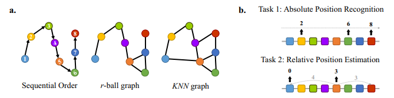 |
Integration of pre-trained protein language models into geometric deep learning networks |
| 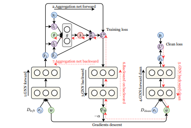 |
GNN Cleaner: Label Cleaner for Graph Structured Data |
| 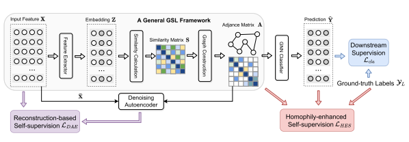 |
Homophily-Enhanced Self-Supervision for Graph Structure Learning: Insights and Directions |
| 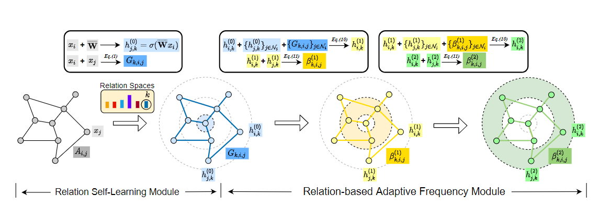 |
Beyond Homophily: Relation-Based Frequency Adaptive Graph Neural Networks |
| 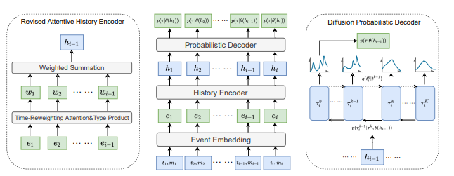 |
Exploring Generative Neural Temporal Point Process |
| 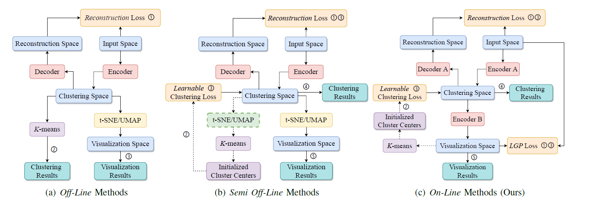 |
Deep Clustering and Visualization for End-to-End High-Dimensional Data Analysis |
 |
Multi-level disentanglement graph neural network |
 |
Self-supervised Learning on Graphs: Contrastive, Generative,or Predictive |
 |
Phenotype classification using proteome data in a data-independent acquisition tensor format |
 |
Foreground-background Parallel Compression with Residual Encoding for Surveillance Video |
Conferences:
 |
Functional-Group-Based Diffusion for Pocket-Specific Molecule Generation and Elaboration |
| 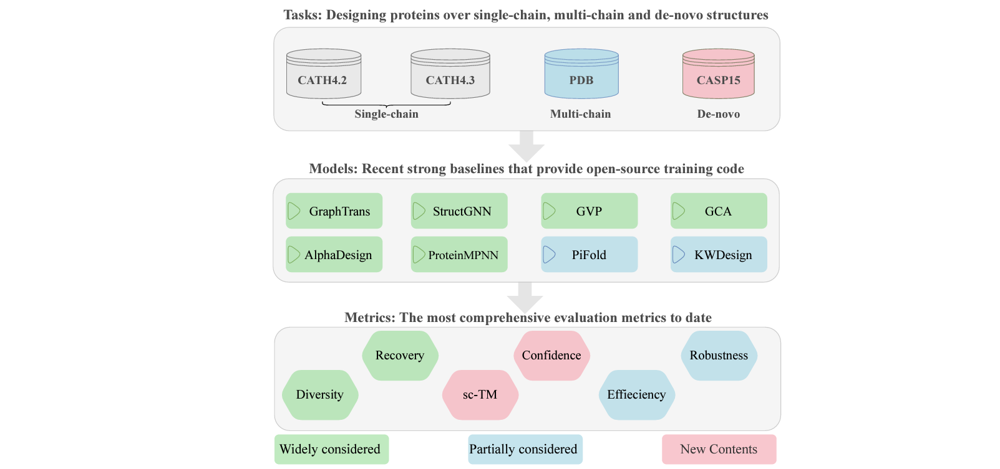 |
ProteinInvBench: Benchmarking Protein Inverse Folding on Diverse Tasks, Models, and Metrics |
| 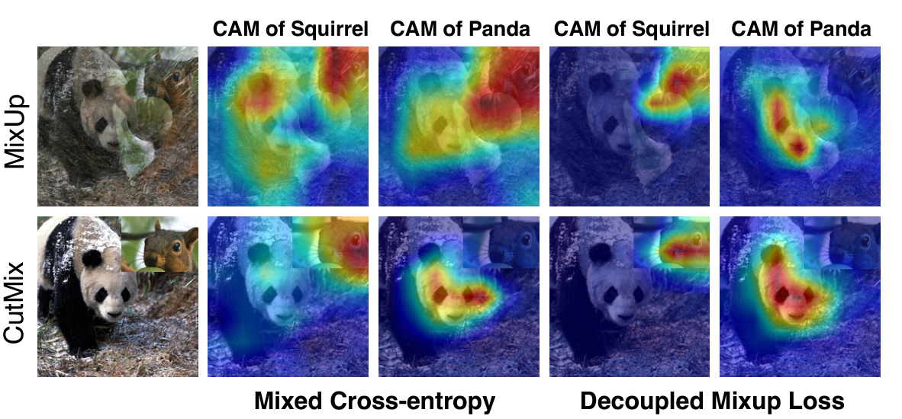 |
Harnessing hard mixed samples with decoupled regularizer |
| 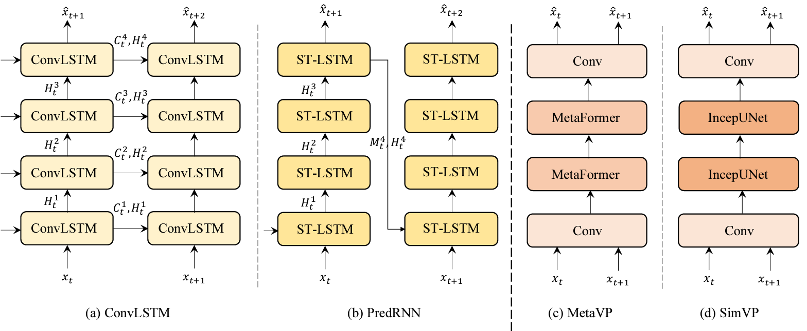 |
OpenSTL: A Comprehensive Benchmark of Spatio-Temporal Predictive Learning |
| 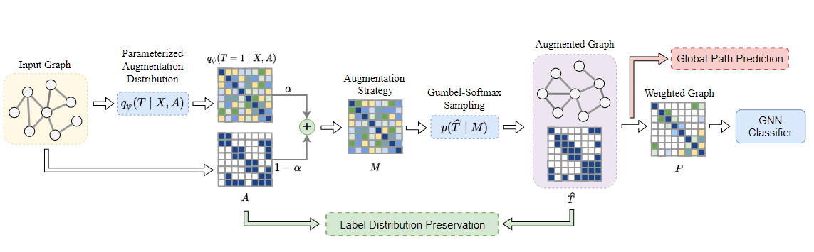 |
Learning to Augment Graph Structure for both Homophily and Heterophily Graphs |
| 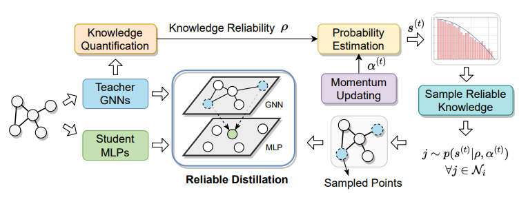 |
Quantifying the Knowledge in GNNs for Reliable Distillation into MLP |
| 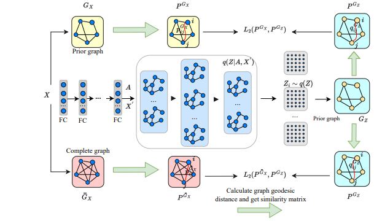 |
Deep Manifold Graph Auto-Encoder For Attributed Graph Embedding |
| 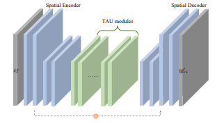 |
Temporal Attention Unit: Towards Efficient Spatiotemporal Predictive Learning |
| 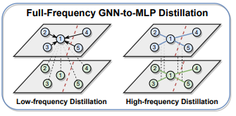 |
Extracting Low-/High- Frequency Knowledge from Graph Neural Networks and
Injecting it into MLPs: An Effective GNN-to-MLP Distillation Framework |
| 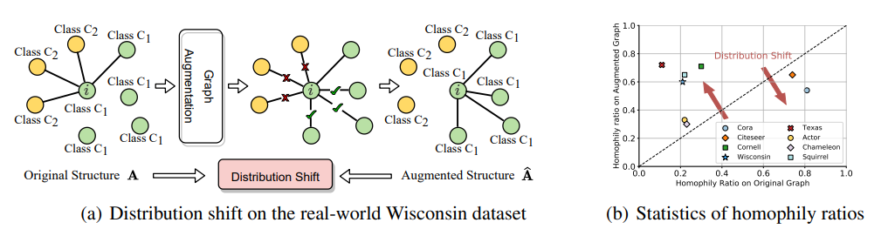 |
Knowledge Distillation Improves Graph Structure Augmentation for Graph Neural Networks |
| 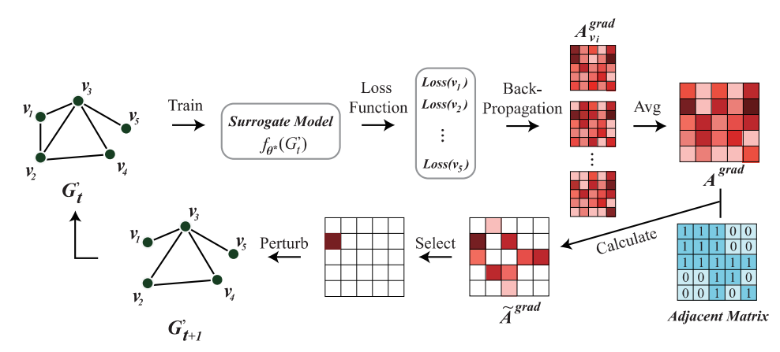 |
Towards Reasonable Budget Allocation in Untargeted Graph Structure Attacks via Gradient Debias |
| 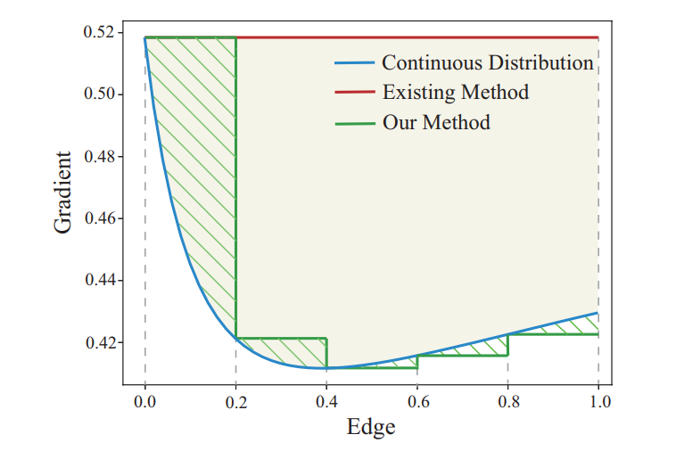 |
Are Gradients on Graph Structure Reliable in Gray-box Attacks? |
| 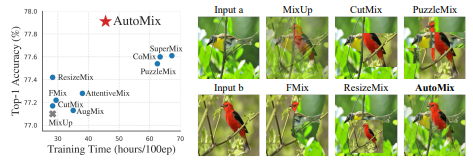 |
AutoMix: Unveiling the Power of Mixup for Stronger Classifiers |
| 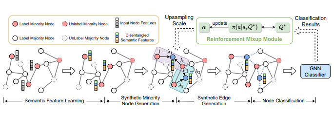 |
GraphMixup: Improving Class-Imbalanced Classification by Self-supervised Context Prediction |
| 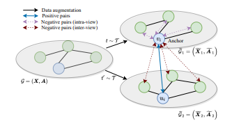 |
ProGCL: Rethinking Hard Negative Mining in Graph Contrastive Learning |
| 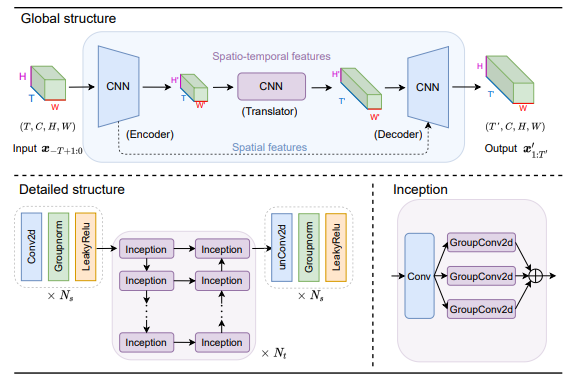 |
SimVP: Simpler Yet Better Video Prediction |
 |
Hyperspecral Consistency Regularization |
 |
OT Cleaner: Label Correction as Optimal Transport |
 |
SimGRACE: A Simple Framework for Graph Contrastive Learning without Data Augmentation |
 |
Conditional Local Convolution for Spatio-temporal Meteorological Forecasting |
 |
Generalized Clustering and Multi-Manifold Learning with Geometric Structure Preservation |
 |
Co-learning: Learning from Noisy Labels with Self-supervision |
 |
Invertible Manifold Learning for Dimension Reduction |
 |
A Gan-based Tunable Image Compression System |
Services
Membership:
- IEEE, Student Member, 2019-present
Program committee member | Reviewer
- International Conference on Computer Vision (ICCV), 2023
- ACM SIGKDD Conference on Knowledge Discovery and Data Mining (KDD), 2023
- Conference and Workshop on Neural Information Processing Systems (NeurIPS), 2022, 2023
- International Conference on Machine Learning (ICML), 2022, 2023
- IEEE Conference on Computer Vision and Pattern Recognition (CVPR), 2022, 2023
- IEEE Transactions on Neural Networks and Learning Systems (TNNLS)